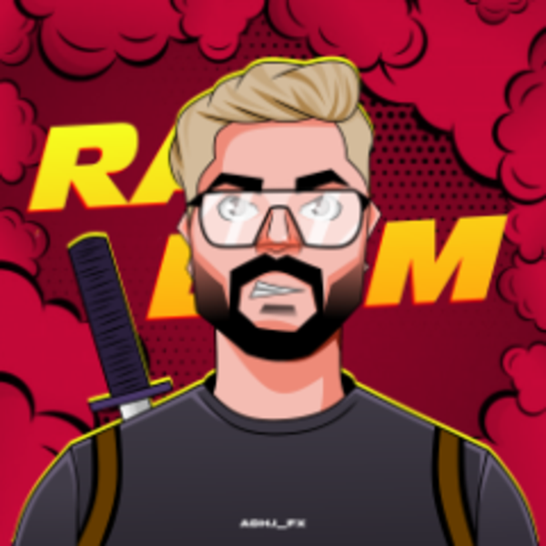

RANDOM_GTV / STREAM TOOLS
Your stream, in sync.
A live overlay that follows your channel. One URL. Always current.

CONNECTED CHANNEL
RANDOM_gtv
Checking channel…
CURRENT CATEGORYDetecting…Refreshes every minute
MATCHING REWARDS—Checking public Drops feed
YOUR OVERLAY
Stream preview
Published settings↗
▧ TRANSPARENT GAMEPLAY AREAYour game stays visible here
MAKE IT YOURS
8 PRESETSTheme library
Per-game assignments use the current detected Twitch category.
LAYOUT & MOTION
Overlay design
Bottom information bar
Up to 8 messages, 160 characters each. Heights shown at 1920 px width.
AUTOMATIC DROPS
Data & reward lineup
Category-specific confirmation. This does not enable Drops or verify viewer eligibility.
Loading matching rewards…
Connection & data diagnostics
Connecting…
CONNECT ONCE
Ready for OBS
Add a Browser Source, turn off Local file, and paste this URL.
Set the width and height to your canvas, for example 1920 × 1080.
PUBLISH YOUR CHANGES
Preview here. Publish through GitHub.
Controls change this preview only. Download your settings, replace config.json on GitHub and commit. OBS picks them up after the site deploys. Code releases reload automatically.